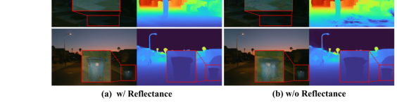

LR-SGS：用于自驱动的鲁棒激光雷达反射引导显着高斯溅射
简单摘要
自动驾驶场景的高保真重建与新颖视图合成对端到端自动驾驶模型的测试和训练具有重要价值。近年来基于图像的3DGS方法展现了快速高保真渲染性能，大量研究尝试将其应用于室外驾驶场景。然而在自动驾驶场景中，纯相机方法容易受到复杂光照条件和显著自运动的影响，导致纹理不一致和优化不稳定。现有将激光雷达集成到高斯泼溅的方法主要依赖点云的直接高斯初始化和深度监督，未能充分利用激光雷达携带的几何和纹理信息。为此本文提出激光雷达反射率引导的显著高斯泼溅方法（LR-SGS），将激光雷达强度标定为光照不变的反射率，并将其作为额外属性通道附加到每个高斯图元上。同时引入结构感知的显著高斯表示——每个显著高斯具有主导方向、其余两轴共享单一尺度。高斯从几何边缘点、几何平面点和反射率边缘点构成的激光雷达特征点集合初始化。开发了改进的密度控制策略和显著变换机制，在Waymo数据集的高密度交通、高速行驶和复杂光照三类挑战性场景上验证了有效性。

核心创新
1. 首次将激光雷达强度标定为反射率，作为光照不变材质属性通道附加到每个高斯图元，为3DGS提供不受光照影响的额外几何先验。
2. 提出结构感知的显著高斯表示，每个显著高斯具有主导方向、其余两轴共享单一尺度，在减少参数的同时精确刻画轮廓和平面结构。
3. 设计从几何边缘点、几何平面点和反射率边缘点三类激光雷达特征点的初始化策略。
4. 开发改进的密度控制策略和显著变换机制，根据高斯椭球的线性和平面性度量自适应切换状态。
技术细节
该框架从RGB图像和LiDAR点云的联合输入出发，提出显著高斯（Salient Gaussians）引导的场景表示，实现外观、几何和反射率特性的同时重建。其核心设计包括：LiDAR几何和反射率特征提取、显著高斯的初始化与动态类型转换、以及显著方向约束下的协方差参数化。
LiDAR物理建模与反射率投影：LiDAR通过发射激光脉冲并记录飞行时间和反射能量获取空间坐标与反射强度。强度公式化为I = C · ρ · cos(θ) / d²，其中C为LiDAR相关常数，ρ为目标反射率，θ为激光束与表面法向的入射角，d为距离。反射率可表示为距离和角度校正后的强度。入射角由局部法向估计：cos(θ) = |(p_i - p_j) · n_i| / ||p_i - p_j||，其中n_i为点p_i处的局部法向（通过邻域点估计）。利用相机外参和内参将点云投影到相机平面，得到稀疏LiDAR反射率图像R_sparse，将反射率值归一化至[0,1]。
反射率梯度提取：不同材料之间的边缘通常表现出显著的反射率梯度。对像素(u,v)，其反射率梯度定义为：∇R(u,v) = sqrt((R(u+1,v) - R(u-1,v))² + (R(u,v+1) - R(u,v-1))²)，对应3D点p(u,v)。当某方向缺少有效邻域时，该方向梯度赋零。生成的反射率梯度图像提供额外的材料边界监督。反射率图像和梯度图像共同作为约束高斯几何和纹理一致性的额外监督信号。
显著高斯（Salient Gaussians）表示：自动驾驶场景包含丰富的几何和纹理结构（物体轮廓、道路边界、地面平面）。位于场景边缘的高斯在优化过程中逐渐沿边缘方向拉长，其最大缩放方向被视为主导方向d_dom；位于平面区域的高斯趋于扁平化，其主导方向对应最小缩放方向。称这些表征环境特征的为显著高斯。每个显著高斯的协方差矩阵简化为：Σ = R d_dom d_dom^T R^T · s_dom² + R d_non R^T · s_non²，其中主导缩放s_dom和非主导缩放s_non仅两个参数替代完整各向异性缩放的三个参数，既保留了高保真几何结构又减少了优化参数和计算开销。
基于LiDAR的高置信度点集初始化：从LiDAR中提取两类特征点：(1) 几何特征点：通过计算每个LiDAR点p_i的平滑度c = (1/|S|·||p_i||) · ||Σ_{j∈S}(p_i - p_j)||（S为邻域点集），基于平滑度将点分为边缘点（低平滑度）和平面点（高平滑度），分别在物体轮廓和结构位置提供全局结构和轮廓约束；(2) 反射率特征点：对点p_i，沿同一环取左右邻域点集S_L和S_R，计算反射率梯度c_ref = |(1/|S_R| Σ_{j∈S_R} R_j) - (1/|S_L| Σ_{j∈S_L} R_j)|，选择反射率梯度大的点为反射率边缘点。几何特征点和反射率特征点共同构成高置信度点集——前者主要分布在边缘和平面区域提供全局结构约束，后者强调材料差异补偿RGB在低纹理区域的不足。从高置信度点集初始化显著高斯（边缘点和反射率边缘点→边缘显著高斯，平面点→平面显著高斯），剩余SfM点初始化为非显著高斯。
密度控制的自适应改进：(1) 分裂方向：边缘显著高斯沿主导方向分裂，平面显著高斯在垂直于主导方向的平面内分裂；(2) 类型继承：分裂或克隆产生的新高斯继承父高斯的类型；(3) 非显著高斯沿用标准密度控制。
显著变换策略（Salient Transform）：实现显著高斯与非显著高斯之间的双向转换。对有序缩放s₁≥s₂≥s₃的高斯，定义线性度L = (s₁-s₂)/s₁和平坦度P = (s₂-s₃)/s₁。在每次密度控制时评估所有高斯：(1) 升级：当非显著高斯在连续两次评估中L或P超过阈值τ_up，升级为显著高斯。若L>P则为边缘显著高斯（缩放初始化为s_dom=s₁, s_non=(s₂+s₃)/2），否则为平面显著高斯（s_dom=s₃, s_non=(s₁+s₂)/2）；(2) 降级：当显著高斯的显著和非显著缩放变得相似（最大特征比低于阈值τ_down连续两次），降级为非显著高斯。该机制使显著高斯聚焦于关键结构区域，提升重建精度和效率。
渲染与天空模型：像素颜色、深度和反射率通过alpha混合体积渲染：C(u,v) = Σ_i α_i c_i Π_{j 综合损失函数：L = L_rgb + λ_lidar L_lidar + λ_cross L_cross。其中L_rgb使用L1损失和D-SSIM的加权组合确保光度一致性。L_lidar利用LiDAR的精确深度和反射率约束：L_lidar = L_depth + λ_ref L_ref + λ_grad L_grad，其中L_depth为渲染深度与LiDAR深度间的L1损失，L_ref为渲染反射率与LiDAR投影反射率间的L1损失，L_grad为反射率梯度一致性损失。L_cross确保跨模态一致性。 基线 我们将我们的方法与几种最先进的方法进行比较，包括 3DGS 、 DeformGS 、 PVG 、 StreetGS 和 OmniRe。最佳结果和次佳结果分别以粗体和下划线突出显示。在所有指标中，我们的方法在不同场景类别上都取得了有竞争力的性能，表现出更强的适应性和泛化性。 (c)，光照不变的 LiDAR 反射率提供了稳定的约束，有效地减轻了 StreetGS 和 OmniRe 中的伪影，并保持了一致的场景重建。(e)，显着高斯在关键几何和纹理结构上建立更强的先验，并结合互补的纹理信息和反射率的边界线索。总体而言，我们的方法实现了动态对象和静态环境的更高保真度重建，即使在具有挑战性的条件下也能产生丰富的几何和纹理细节的新颖视图合成。 在训练过程中，我们使用三个前置摄像头和激光雷达。为了彻底评估我们的方法，我们选择了四个类别的 24 个序列。每四帧用于测试，其余用于训练。 我们将我们的方法与几种最先进的方法进行比较，包括 3DGS 、 DeformGS 、 PVG 、 StreetGS 和 OmniRe。我们使用 PSNR、SSIM 和 LPIPS 评估 RGB 渲染，而对于 LiDAR 反射率，我们使用 RMSE 评估性能。我们报告密集交通场景中移动物体的 PSNR (PSNR*)，以评估动态物体的重建。 所有实验均进行 30k 次训练迭代。我们使用具有 LiDAR 深度监控的 3DGS 和 DeformGS 实现（3DGS* 和 DeformGS*），以及所有其他方法的默认设置的官方实现。显着变换阈值 在所有指标中，我们的方法在不同场景类别上都取得了有竞争力的性能，表现出更强的适应性和泛化性。(e)，显着高斯在关键几何和纹理结构上建立更强的先验，并结合互补的纹理信息和反射率的边界线索。总体而言，我们的方法实现了动态对象和静态环境的更高保真度 实验先检查了 表显示了所有序列的平均定量结果。 我们通过去除显着高斯并使用 LiDAR 特征点初始化非显着高斯进行消融，以评估显着高斯的有效性，表示为 w/o SG。表报告  我们评估了显着高斯的 LiDAR 特征点初始化（LF-Init）对重建的影响。表显示使用 LiDAR 特征点初始化显着高斯可以提高渲染图像质量。此外，表显示这种初始化为显着高斯提供了一个更好的起点，以便尽早与关键的几何和纹理结构对齐。 我们通过将完整方法与仅使用颜色损失和激光雷达深度损失的变体进行比较来评估激光雷达反射率的影响。表显示，引入 LiDAR 反射率作为附加高斯属性，以及相关的监督，可显着提高渲染质量。此外，光照不变的激光雷达反射率在复杂的光照条件下提供稳定的约束，从而实现更准确的几何重建和更少的模糊伪影。 为了评估所提出的联合损失的效果，我们进行了一项消融研究，其中仅使用 RGB 损失和 LiDAR 损失项。表提供了 seg125050 场景上联合损失的消融研究。在没有联合损失的情况下，车辆显得模糊，而引入联合损失则保留了清晰的车辆轮廓，这表明 RGB 和 LiDAR 反射率的组合纹理线索有效地改善了整体。 我们选择四个序列（每个场景类别一个）来评估高斯数量、训练时间和 FPS。与基线方法相比，我们的方法取得了最好的性能。我们的方法提高了重建质量，同时也提高了效率。 如果把这篇论文放回问题背景里看，它真正的价值在于：最近的 3D 高斯分布 (3DGS) 方法证明了自动驾驶场景重建和新颖视图合成的可行性。这说明作者不是只补一个局部模块，而是在重新组织问题该怎样被解决。 最能支撑这个判断的，还是实验给出的证据：为了解决这些问题，我们提出了一种用于自动驾驶场景的稳健且高效的激光雷达反射引导显着高斯分布方法（LR-SGS），该方法引入了结构感知的显着高斯表示，从几何和反射初始化。换句话说，这些设计并不只是概念上更完整，而是实实在在改变了最终结果。 当然，它离真正成熟的方案还有距离：当前方案的局限在于它仍然受制于计算资源、输入质量或场景复杂度，距离真正稳健的大规模部署还有差距。后续更值得继续推进的方向，是 未来继续提升效率、泛化能力以及在更复杂场景下的稳定性。实验结论
4.1 实验装置
4.1.1 数据集
4.1.2 基线
4.1.3 实施细节
 lazy' decoding='async' />
lazy' decoding='async' />4.2 定性和定量结果
 alt='Figure 5:' loading='lazy' decoding='async' />
alt='Figure 5:' loading='lazy' decoding='async' />@ Method PSNR SSIM LPIPS w/o SG 28.74 0.830 0.152 w/o LF-Init 28.94 0.839 0.144 w/o Reflectance 28.87 0.831 0.147 w/o Joint Loss 28.96 0.835 0.144 Ours 29.22 0.850 0.139 Iteration Method PSNR SSIM LPIPS Training 7k w/o LiDAR 25.50 0.816 0.213 13m12s — w/o SG 25.52 0.824 0.209 13m48s — Ours 26.41 0.839 0.188 11m05s 15k w/o LiDAR 27.98 0.860 0.140 30m34s — w/o SG 27.54 0.858 0.143 31m17s — Ours 28.13 0.863 0.136 28m54s 30k w/o LiDAR 28.76 0.890 0.115 68m37s — w/o SG 28.51 0.874 0.119 70m21s — Ours 28.96 0.894 0.112 61m57s 4.3 消融研究
4.3.1 显着高斯
@ Method PSNR SSIM LPIPS RMSE w/o Joint Loss 30.08 0.913 0.057 0.1063 w/ Joint Loss 30.39 0.917 0.053 0.0854 @ Method PSNR Number Training FPS StreetGS 28.20 2,929,851 64m30s 33.61 OmniRe 28.62 2,744,275 67m11s 30.55 Ours 28.95 2,510,883 59m25s 36.95 4.3.2 LiDAR 特征初始化
4.3.3 激光雷达反射率
4.3.4 联合损失
4.4 效率分析
理解评价